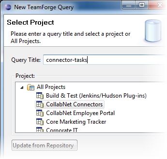
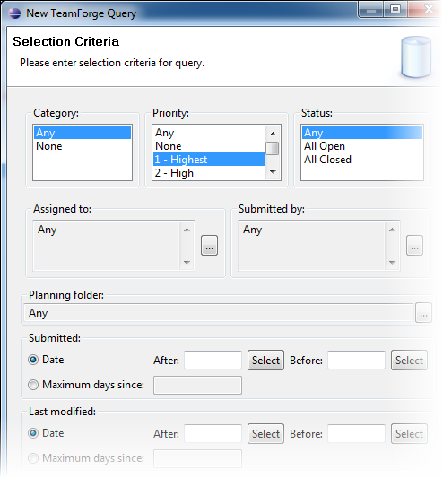

After you add your TeamForge repository to
the Mylyn Task Repositories view, you can create task lists for your
tasks, tracker artifacts or planning folder artifacts by adding queries.
-
In the Task Repositories view, right-click the task
repository and select New Query.
The New TeamForge Query wizard opens.
-
Enter a title for your query.
This is a required field.

-
Select a TeamForge project or All
Projects and click Next.
-
Select a planning folder, tracker, task folder or All Trackers and click
Next.
-
Select other criteria you want to include in your query.
The fields available depend on what was configured for the tracker. Here's an
example:

Tip:
- You can select multiple values in most fields — Assigned to,
Submitted by, Category, Priority, Status, Reported in Release,
Resolved in Release, and user-defined fields. The query uses OR
filtering when multiple values are selected.
- If you selected an individual tracker for your query, you can
include user-defined fields for that tracker.
-
Click Finish.
Your query appears in the Task List view.